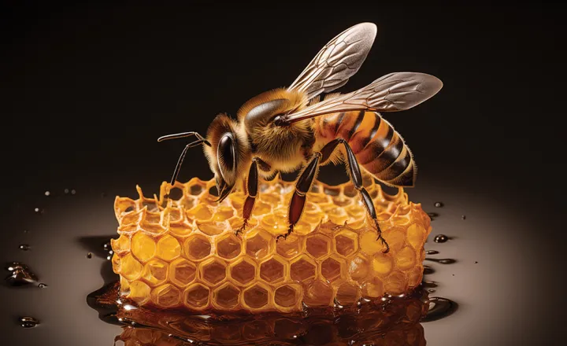

A Importância das Abelhas
As abelhas são essenciais para a polinização de culturas agrícolas, aumentando a produtividade e a diversidade das plantas. Além disso, são indicadoras da saúde ambiental e fornecem produtos como mel e cera. No entanto, enfrentam sérios desafios que ameaçam suas populações, como doenças, pesticidas e perda de habitat. Proteger as abelhas é crucial para a segurança alimentar global e a sustentabilidade ambiental, exigindo práticas agrícolas sustentáveis e a redução do uso de produtos químicos nocivos.